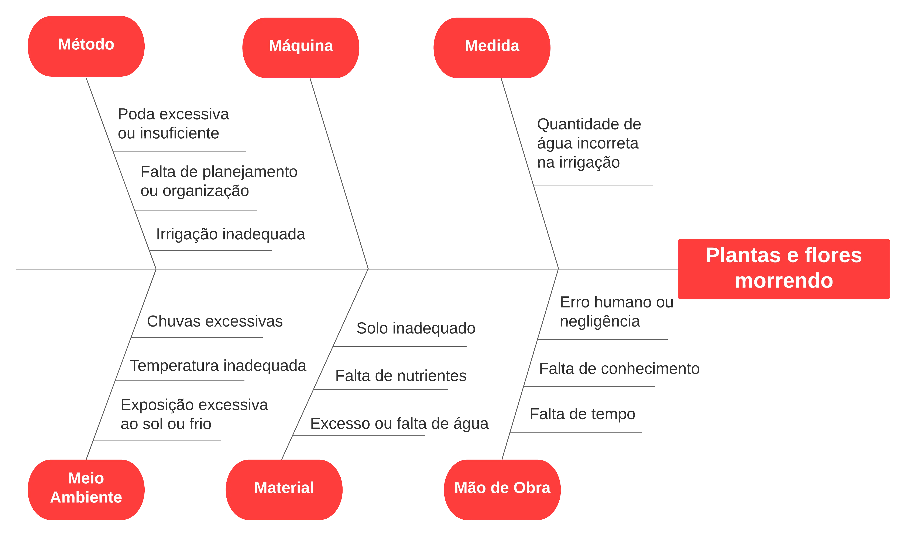
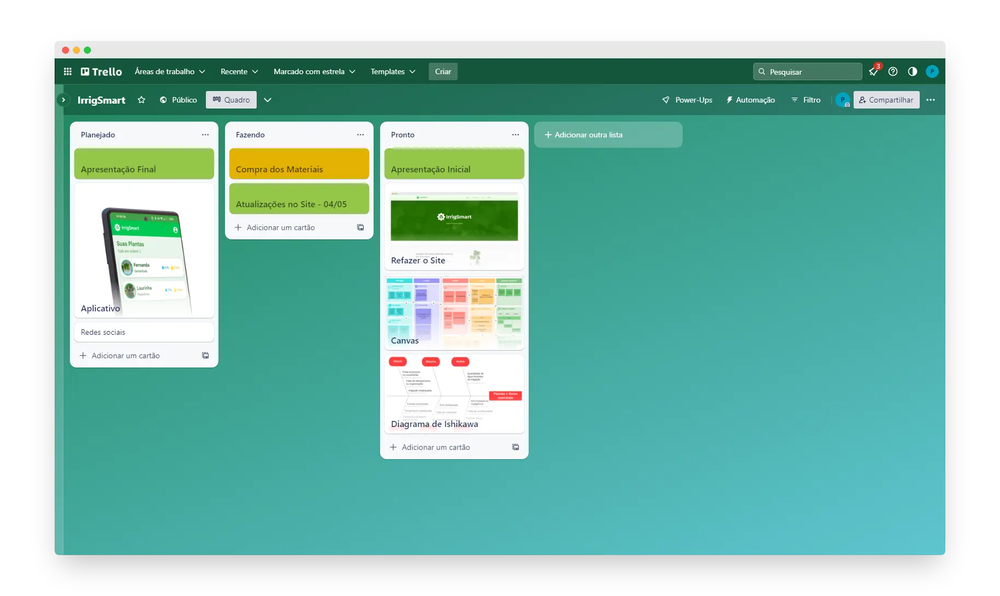

Planejamento
Confira as ferramentas que utilizamos para melhorar o planejamento de nosso projeto.
Nosso principal problema é o de plantas e flores morrendo, a partir disso traçamos as principais causas utilizando o diagrama de Ishikawa (6M).

O Project Model Canvas é uma metodologia visual de cocriação de planos de projeto, com o objetivo de tornar o processo de planejamento mais eficiente. Utilizamos ele para estruturar nosso projeto.

O Trello é uma plataforma de gerenciamento de projetos por meio de cartões. Nós utilizamos ele para melhorar o gerenciamento de nosso projeto. Acessar Trello

Utilizamos a inteligência artificial do ChatGPT para dar uma opinião técnica sobre o projeto. Confira as mensagens: